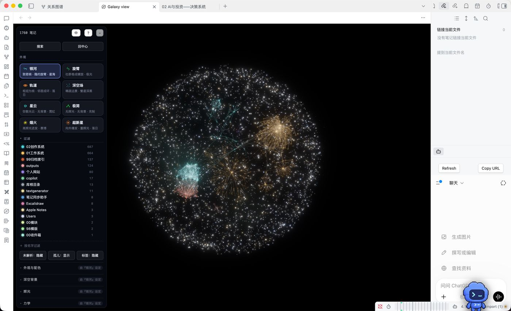
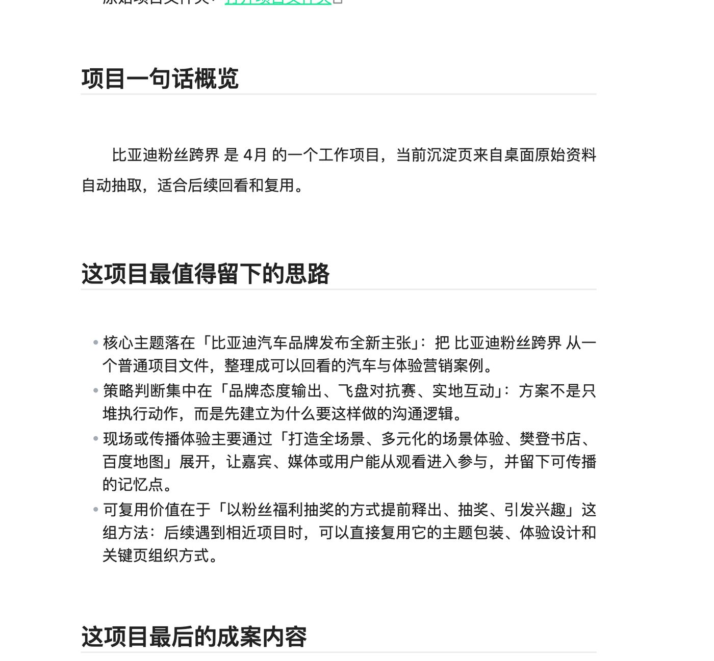
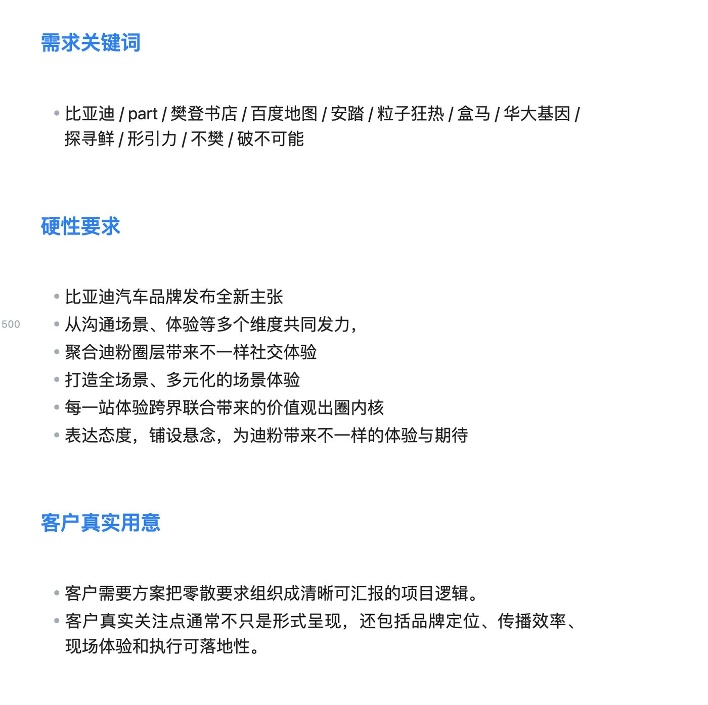
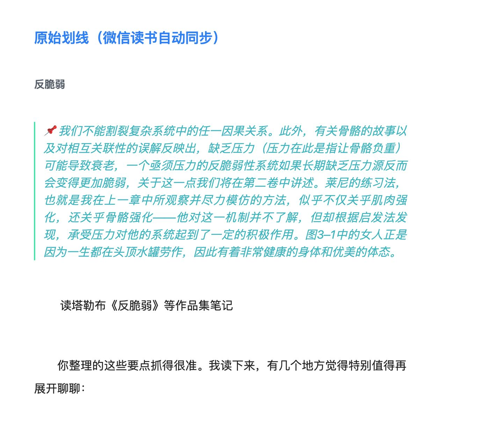
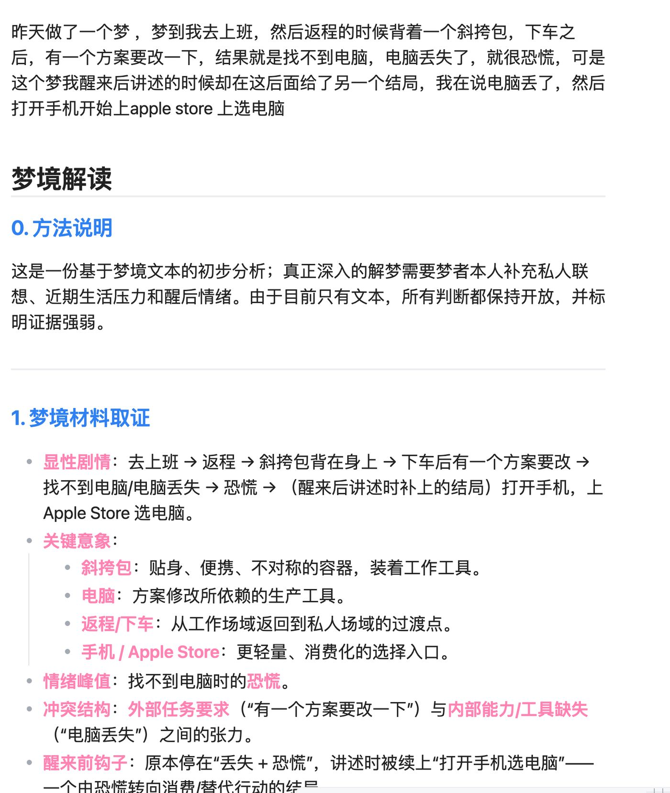

技术思考 · 第 03 篇 / 共 5 篇
Obsidian——知识系统
笔记不是仓库，是外脑；AI 的长期记忆
·
Obsidian——知识系统

我是今年 4 月才开始用 Obsidian 的。从一个什么都不懂的新玩家，到现在把它当成 Codex 的操作系统、当成我和 AI 对话时共同使用的文件夹，回头看，这个过程好像就是昨天才发生的。最开始我的想法其实很简单，我只是想做一些记录，把自己经常使用的思考路径、突然冒出来的念头，还有生活里那些说不清楚但又不想忘记的感受记下来。
AI 时代，人人都可以让 AI 把一段话写得更清晰、更有逻辑。但也正因为这样，我们读到的文字里，人的部分反而越来越少。人的感性、犹豫，甚至某些毫无来由的跳跃，常常才是灵感真正出现的地方。我不想每次记录都被整理成一个标准答案。
年初的时候我开始用 Day One，这是一个专门写日记的 App。它已经可以植入一些系统性的 Prompt，引导你回顾一天、整理情绪，或者按照固定框架思考。但我的记录一直很随性，我很难被那种提前设计好的逻辑吸引。有时候我只是想记一句话，一个画面，或者当时突然产生的感受，并不想马上知道它属于哪个分类、最后应该得出什么结论。
更早以前，我也试过写在本子上，或者放进苹果自带的备忘录。这些工具都挺好用，但记录这件事有一个问题：即使你保存了当时的感知和想法，它们还是会随着时间慢慢变得黯淡。你知道它们存在，却很少再回去看。
但有时候翻到很多年前写的文章，我也会惊讶，原来那个时候的自己已经想过这些问题，甚至会被从前的某些想法打动。所以当我开始使用 Obsidian 时，我真正想做的，是找到这些想法之间的联系，看看它们从哪里来，又在后来去了哪里。
后来我看到了卡帕西分享的个人知识库，很多原本模糊的东西突然变得清楚了。
他的做法其实不复杂：把论文、文章、代码、数据和图片都放进一个原始资料库，再让 LLM 持续把这些资料整理成 Markdown Wiki，补充摘要、建立索引，也建立不同文档之间的联系。Obsidian 只是查看和操作这些内容的界面。每次问答产生的文章、幻灯片和图表，也不会留在聊天窗口里，而是重新存回 Wiki。
这样一来，资料越用越多，知识库也会越来越贴近使用它的人。以前问过的问题不会随着聊天结束而消失，每次整理和探索都会留下一点东西。
这个思路让我重新看待自己的 Obsidian。作为一个策划，我需要的可能不只是一个知识库。我更需要一个能够识别我正在经历的项目，也能理解我过去做过什么的系统。它要能从历史项目里找到可以再次调用的资源，也要能把今天的工作继续留给以后的我。
于是我开始把自己的 Obsidian 分成两套逻辑：一套是工作系统，一套是创作系统。
工作系统里，我把过去几年的项目资料做成了两层。第一层是原始索引，负责保留项目的时间、文件和来源；第二层是项目精华，把项目里的主题、核心创意、视觉方向、互动方式和方案结构重新整理出来。
新项目进来以后，也不再只是建一个文件夹，把资料全部丢进去。我会按照 Brief 拆解、创意发想、资料补充、方案撰写和项目复盘一步步往前走。AI 可以从以前做过的项目里寻找相似案例，也可以把这次项目里出现的新方法继续写回资料库。
以后这些内容还可以继续拆成视觉知识库、互动知识库和概念知识库。
我很早以前就在想，创意真的有可以复用的概念吗？有可以复用的视觉吗？
答案当然是有。要不然为什么每次开工之前，我们都要先找 Demo，先看看别人已经做过什么？过去大家可能会把参考图存在花瓣、小红书或者自己的 D 盘里，但这些收藏通常只是“我看过”。等真正要用的时候，还是很难想起来它在哪里，为什么收藏，当时觉得它好在哪里。
我想做的，是让这些资料不只被保存，还能被理解和再次调用。以后再遇到一个项目，我不只是搜索某张图片，而是可以问：我以前做过哪些相似的主题？哪些互动方式已经被验证过？哪些视觉方向适合这个品牌？上一次为什么没有做成？


现在你在我个人网站上看到的案例资料，基本都来自 Obsidian 里整理好的原始内容。以前做网站，光是上传资料就是一件很麻烦的事。2022 年初，我自己部署过一个个人网站，当时完全按照公司的标准来做，用的是 WordPress，还花了 2000 块买了 Elementor 的模板。光是把 2021 到 2022 年的方案内容截图、整理再上传，我就用了整整三天。全程都是人工截图，自由度和今天也完全没法比。有了现在这套系统，同一份资料可以进入网站，也可以进入新的项目、作品集或者职业经历介绍。它不需要每次从头再整理一遍。
除了工作系统，我还做了自己的创作系统。
Obsidian 里有很多很好用的插件。读书时做过的划线，可以直接整理成完整的读书笔记；手机里收藏的内容也可以变成笔记，再和正在做的项目建立双向链接。只要你愿意，你听到的、看到的、想到的，几乎都可以留在这里。

这种感觉对我来说很特别。它记录的不只是知识，也是在记录我的学习、感知和注意力。 现在大家都在说注意力是稀缺资源。一个人长期关注什么，被什么打动，在什么地方反复停下来，这些东西可能比一份标准的自我介绍更能说明他是谁。有时候你没有真正回看过自己，就很难知道自己到底想要什么。 我还把自己的播客放进了这个系统。以前做过的 78 期节目，我把文字内容全部整理进去，让 AI 根据过去讨论过的话题和我最近关注的内容，持续生成新的选题。它给出的不再是网上随处可见的热门话题，而是和我以前说过什么、现在在想什么有关。小说也是一样。大纲、人物、世界观、已经写过的章节和临时冒出来的场景，都可以放在同一个系统里。写到后面时，AI 能回去查前面的设定，也能发现人物的变化是不是和最初的大纲发生了冲突。 Obsidian 里面其实还有很多可以玩的东西。我甚至用 Generate Context 调用自己写的 Skill 来解梦。每天醒来以后，我会把还记得的梦记录下来，再让 AI 分别从《周易》的象征系统和弗洛伊德的精神分析视角去理解。同一个梦放进两套完全不同的解释体系里，有时候得到的答案甚至是相反的。但我觉得这件事很有意思，因为解梦不一定是为了得到一个正确答案，它更像是借助梦，重新看看自己最近在害怕什么、渴望什么，又在回避什么。

从 4 月到现在，我做的事情看起来很多，但最开始真的只是想好好记下一些东西。Obsidian 刷新了我对记录这件事的理解：记录当下的每一个瞬间，也记录每一个抓住你注意力的点，让过去的项目、旧文章、日记里的感受、读过的书和突然出现的灵感，在未来的某一天重新相遇才是记录这件事在这个时代该有的样子。⬅️ 上一篇：02 AI与投资——决策系统 ｜ 返回 技术思考 ｜ 下一篇：04 AI时代与人——人的位置